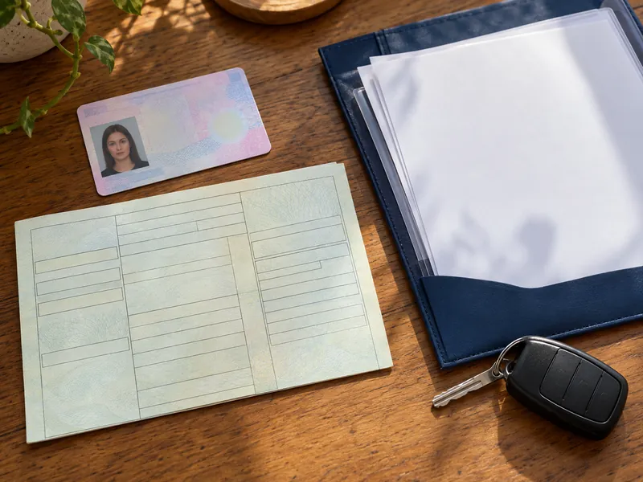

Trafik ve ÇevreKonu 14 / 1737 çıkmış soru
Sürücü belgesi, tescil, muayene ve sigorta
Sürücü belgesi sınıflarını ve yaş şartlarını, sürücü adaylarında aranan şartları, araçta bulundurulması zorunlu belge ve gereçleri, araç tescili, muayene ve zorunlu sigorta kurallarını anlatır.

1Konu anlatımı
Akılda kalsın
- Sürücü belgesi araç kullanırken yanda bulundurulur, yetkililer istediğinde gösterilir ve kullanılan aracın cinsine uygun olmalıdır.
- Motosiklet için A grubu belge gerekir: A1 125 cm³ ve 11 kW'a kadar, A2 35 kW'a kadar, A ise bütün motosikletler içindir; iş makinesi için G, traktör için F sınıfı gerekir.
- Sürücü belgesi için yaş, en az ilkokul eğitimi, sağlık şartları ve kurs-sınav başarısı aranır; meslek veya araç sahibi olmak şart değildir.
- Araç tescil belgesi (ruhsat) aracın sahiplik belgesidir ve trafikteki araçta bulunması zorunludur.
- Hususi otomobiller ilk 3 yıl muayeneden muaftır, sonra 2 yılda bir muayene edilir; teknik değişiklik yapıldığında veya kazadan sonra yetkili gerekli gördüğünde özel muayene zorunludur.
- Araçta yapılan teknik değişiklik 30 gün içinde tescil kaydına işletilmelidir; işletilmeyen araç trafikten men edilir.
- Zorunlu mali sorumluluk (trafik) sigortası her araç sahibi için zorunludur; kasko isteğe bağlıdır.
Sürücü belgesi ve sürücünün yükümlülükleri
Sürücü belgesi, motorlu araçların kara yolunda sürülmesine yetki veren belgedir. Sürücü belgesi olmayan kişilerin motorlu araç sürmesi de, bu kişilere araç sürdürmek de yasaktır. Sürücüler:
- Belgelerinin sürdükleri aracın cinsine uygun olmasına dikkat eder,
- Araç kullanırken belgelerini yanlarında bulundurur ve yetkililer istediğinde gösterir,
- İkamet adresi değişikliklerini 30 gün içinde bildirir.
Sürücü belgesi sınıfları
| Sınıf | Kullanılabilecek araç | En küçük yaş |
|---|---|---|
| M | Motorlu bisiklet (moped) | 16 |
| A1 | Silindir hacmi 125 cm³'ü, gücü 11 kW'ı geçmeyen motosikletler | 16 |
| A2 | Gücü 35 kW'ı geçmeyen motosikletler | 18 |
| A | Bütün motosikletler | 20 (en az 2 yıllık A2 ile) veya 24 |
| B1 | Dört tekerlekli motosiklet | 16 |
| B | Otomobil ve kamyonet | 18 |
| BE | B sınıfı araç + 3.500 kg'a kadar römork | 18 |
| C1 / C1E | 3.500–7.500 kg kamyon ve çekici / bunların römorklu hâli | 18 |
| C / CE | Kamyon ve çekici / bunların römorklu hâli | 21 |
| D1 / D1E | Minibüs / römorklu minibüs | 21 |
| D / DE | Minibüs ve otobüs / römorklu otobüs | 24 |
| F | Lastik tekerlekli traktör | 18 |
| G | İş makineleri | 18 |
C1, C, D1 ve D sınıfı için en az B sınıfı belgeye; E ile biten römorklu sınıflar için ise ilgili ana sınıfa (örneğin CE için C'ye) sahip olmak gerekir. Bir belge alt sınıfları da kapsar: B sınıfı ile M, B1 ve F sınıfı araçlar da sürülebilir; A2 ile M ve A1 sınıfı araçlar kullanılabilir. M, A ve B grubu ile F ve G sınıfı belgeler 10 yıl, C ve D grubu belgeler 5 yıl geçerlidir. İlk kez belge alanlar 2 yıl süreyle aday sürücü sayılır.
Sürücü adaylarında aranan şartlar
- Sınıfına göre yaş şartını taşımak,
- En az ilkokul düzeyinde eğitim almış olmak,
- Sağlık şartlarını taşımak,
- Sürücü kursunda teorik ve uygulamalı eğitimi tamamlayıp sınavları başararak motorlu taşıt sürücüsü sertifikası almak,
- Adli sicilinde kanunda sayılan belirli suçlardan mahkûmiyet bulunmamak.
Bir meslek sahibi olmak veya motorlu araç sahibi olmak şart değildir. Renk körlüğü trafik ışıklarının yeri ve sırası sabit olduğundan tek başına belge almaya engel sayılmaz. İşitme yetersizliği olan aday, işitme cihazıyla yönetmelikte istenen duyma yeterliliğine ulaşırsa B sınıfı belge alabilir.
Araç tescili ve belgeler
Araç tescil belgesi (ruhsat) aracın kimin adına kayıtlı olduğunu gösteren sahiplik belgesidir ve trafikteki araçta bulundurulması zorunludur. Kayıt ve tescilinin yapılmış olması, aracın trafiğe çıkmaya uygun olduğunu gösterir. Bakım kartı, yağ değişim kartı veya noter satış belgesi taşıma zorunluluğu yoktur.
Araç üzerinde renk ve teknik değişiklik yapılması ya da kullanım amacının değiştirilmesi hâlinde değişiklik 30 gün içinde tescil belgesine ve kayıtlarına işletilmelidir. Süresinde bildirilmeyen araçlar, değişiklik belgelenip tescil edilinceye kadar trafikten men edilir. Mevzuata aykırı değişiklik yapmak ise yasaktır.
Araç muayenesi
Araçların teknik şartlara uygunluğu, cihaz ve uzman personel bulunan muayene istasyonlarında kontrol edilir. Hususi otomobiller ilk 3 yıl muayeneden muaftır, 3 yaşından sonra 2 yılda bir muayene ettirilir. Ticari ve ağır taşıtların muayene aralıkları daha kısadır.
Muayene süresi dolmasa bile şu hâllerde özel muayene zorunludur:
- Araç üzerinde teknik değişiklik yapıldığında,
- Kazaya karışan aracın muayenesi yetkili zabıtaca gerekli görüldüğünde.
Sahip veya sürücü değişikliği ya da olağan bakım özel muayene gerektirmez. Zorunlu trafik sigortası yaptırılmamış araçlar muayeneye alınmaz.
Sigorta
Zorunlu mali sorumluluk (trafik) sigortası, aracın üçüncü kişilere verebileceği zararları karşılar; trafiğe çıkan her motorlu araç için yaptırılması zorunludur ve sürücü, istendiğinde poliçe bilgilerini yetkililere göstermek zorundadır. Kasko isteğe bağlıdır. Koltuk ferdi kaza sigortası ise otobüs gibi ticari yolcu taşıyan araçlarda yolcuların güvencesi için zorunludur.
Araçta bulundurulması zorunlu gereçler
Otomobillerde iki adet reflektör, ilk yardım çantası ve yangın söndürme cihazı bulunması zorunludur. Ayrıca kriko, bijon anahtarı, yedek ampul, pense, tornavida, el feneri, karlı ve buzlu günler için bir çift patinaj zinciri ve çekme halatı bulundurulur. Yangın söndürme cihazı otomobil, minibüs, kamyonet, otobüs, kamyon ve çekicilerde zorunludur; lastik tekerlekli traktörde, motosiklette ve bisiklette bu zorunluluk aranmaz.
2Bu konunun soruları
MEB sınavlarında bu konudan çıkmış 37 soru (3 tanesi en az üç sınavda soruldu). Her soruda doğru cevabı ve açıklamasını hemen görürsünüz.
Hangi sorular?
Sıralama